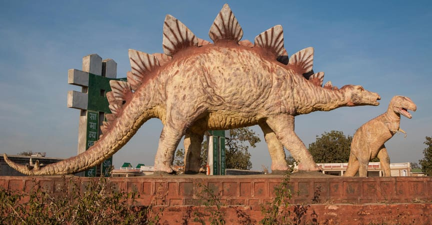

Bhojpur Shiv Temple
Frequented by thousands of devotees every month, this renowned temple is dedicated to Lord Shiva. It is believed that the construction of the temple was started somewhere in the 11th century but was abandoned midway through due to reasons unknown.
The temple has been built out of sandstone blocks and features brilliant architecture along with intricate carvings and sculptures of various gods and goddesses. There is also a Shivalingam in the sanctum. Moreover, there is a small museum dedicated to the temple where you can get more details about the temple.
Famous For: Architecture and religious significance.
Location: Bhojpur Town, Raisen District.
Timings: 6 AM to 7 PM.
Distance from Major City: It is located at a distance of 28 km from Bhopal.
Udaygiri Caves
Udaygiri Caves is a chain of 20 rock-cut caves and is one of the unexplored places in Madhya Pradesh. The caves are believed to have been originated in the 5th century CE. The major factor making these caves a must-visit offbeat place is the presence of some of the oldest Hindu temples.
If you are interested in archaeology, do not skip this place on your visit to Madhya Pradesh as it is one of the most significant archaeological sites in India. The caves also feature iconography of Shaivism, Shaktism, and Vaishnavism.
Famous For: an Important archaeological site featuring iconography.
Location: Vidisha District.
Timings: 9 AM to 6 PM.
Distance from Major City: It is located at a distance of 56 km from Bhopal.
 Temples of Panna
The town of Panna is among the unexplored places in Madhya Pradesh that have a lot to explore. Panna is dotted with many prominent religious sites, majorly ancient Hindu temples.
If you want to explore Hinduism and take a closer look at its culture, a visit to Panna is a must. Some of the most famous temples of Madhya Pradesh here are Jugal Kishoreji Temple, Baldeoji Temple, and Mahamati Prannathji Temple.
Temples of Panna
The town of Panna is among the unexplored places in Madhya Pradesh that have a lot to explore. Panna is dotted with many prominent religious sites, majorly ancient Hindu temples.
If you want to explore Hinduism and take a closer look at its culture, a visit to Panna is a must. Some of the most famous temples of Madhya Pradesh here are Jugal Kishoreji Temple, Baldeoji Temple, and Mahamati Prannathji Temple.
These temples exhibit the blended splendor of Mughal and Hindu architectures.
Famous For: Hindu temples featuring brilliant architectures.
Location: Panna District.
Timings: Open 24 hours.
Distance from Major City: It is located at a distance of 40 km from Khajuraho.
Burahnpur
Please the history buff in you by visiting the historical places on your visit to Madhya Pradesh. The town of Burhanpur, which once served as the capital of Mughal Kingdom, features a range of specimens of brilliant Mughal architecture including mosques, tombs, and palaces.
Situated on the banks of Tapti River, Burhanpur was known as “The Gateway to Southern India” due to its geographical location. It is also a perfect place if you enjoy capturing the culture of a place in your camera as this town will give you a lot of opportunities for photography when you are here.
Famous For: Historical monuments exhibiting Mughal architecture.
Location: Nimar Region of Madhya Pradesh
Timings: Open 24 hours.
Distance from Major City: It is located at a distance of 181 km from Indore.

Fossil National Park
One of the most interesting yet lesser known places in Madhya Pradesh, Ghughua Fossil National Park is a treasure of plant fossils. It is claimed that some of these fossils are over 65 million years old.
If you are interested in archaeology, you must visit this place located in Dindori district, near Shahpura in Madhya Pradesh. This national park featuring fossils of plants, trees, fruits, and seeds was founded in 1983 and has been an attraction to tourists from India and foreign countries since then.
Famous For: Plant fossils dating as far back as 65 million years.
Location: Dindori District, Madhya Pradesh.
Timings: 8 AM to 5 PM.
Distance from Major City: It is located at a distance of 76 km from Jabalpur.
Ken Gharial Sanctuary
Madhya Pradesh boasts a wide range of wildlife sanctuaries and Ken Gharial Sanctuary is one of the lesser known places in Madhya Pradesh, ideal for wildlife adventure. As the name suggests, the star attraction at the sanctuary is Gharial.
Besides, other species like Chinkara, Cheetal, and Wild Boar can also be spotted here. The sanctuary also houses a vast range of flora species including Lagerstroemia parvis flora, Teak, Sal, Saja and many more. Many nature and wildlife photographers also frequent Ken Gharial Sanctuary.
Famous For: Flora and fauna species, especially Gharial.
Location: Chhatarpur District.
Boating Timings: 7 AM to 9 Am and 4 PM to 5 PM.
Distance from Major City: It is located at a distance of 25 km from Khajuraho.
 Bateshwar
If you wish to experience the best blend of spirituality and history in one place, there are few places like Bateshwar in India. Housing a collection of about 200 ancient Hindu temples made of sandstone, Bateshwar is among the unexplored places in Madhya Pradesh which you should definitely explore on your visit to this state delivering old world charm.
These gorgeous temples are dedicated to Lord Shiva, Vishnu, and Shakti, and make this site a revered one not only among the followers of Hinduism but also among explorers and photographers.
These temples were built between the 8th and the 10th century.
Bateshwar
If you wish to experience the best blend of spirituality and history in one place, there are few places like Bateshwar in India. Housing a collection of about 200 ancient Hindu temples made of sandstone, Bateshwar is among the unexplored places in Madhya Pradesh which you should definitely explore on your visit to this state delivering old world charm.
These gorgeous temples are dedicated to Lord Shiva, Vishnu, and Shakti, and make this site a revered one not only among the followers of Hinduism but also among explorers and photographers.
These temples were built between the 8th and the 10th century.
Famous For: A collection of 200 ancient Hindu temples and their brilliant architecture.
Location: Morena District.
Timings: 9:30 AM to 5:30 PM.
Distance from Major City: It is located at a distance of 35 km from Gwalior.
Patalkot
If you are on a hunt to discover places in Madhya Pradesh that are off the beaten path, Patalkot – Village From Netherworld – awaits your visit with its surprisingly beautiful terrains and breathtaking views.
It is a valley that lies buried in the plush green covers of vegetation in Satpura range at an elevation of over 3000 feet and was not known to too many people a couple of decades ago. The valley is majorly inhabited by Gonds and Bharias, which are tribal communities.
You can visit this place in Madhya Pradesh for landscape photography or satiate your wanderlust.
Famous For: Unexplored valley featuring picturesque landscapes.
Location: Chhindwara District.
Timings: Open 24 hours.
Distance from Major City: It is located at a distance of 78 km from Chhindwara.